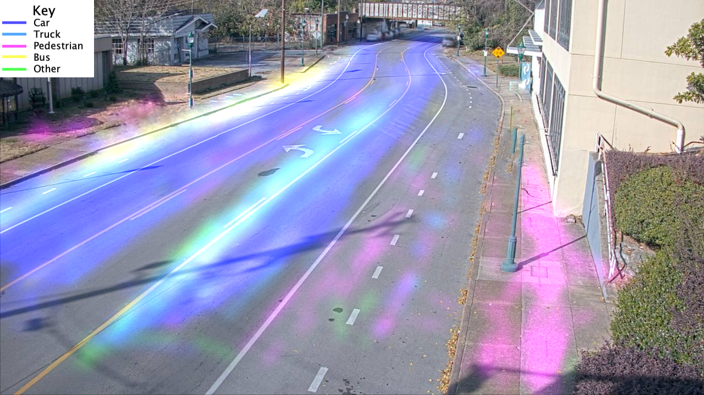

Counting Objects Anonymously using YOLO v3
Background Information:
This is done using YOLO (You Only Look Once), a Convolutional Neural Network (CNN) that has been trained to detect a variety of different objects. This project in particular uses YOLO v3, which can detect 80 different kinds of objects!This project also uses PyImageSearch's Object Tracking. Originally it utilized a Caffe model, but that was found to be quite inefficient and required much lower quality footage (thus reducing accuracy as well). Instead of suffering in quality and accuracy, the team decided to utilize YOLO's accurate detection with PyImageSearch's accurate tracking. The result is shown above (unless the processing server is offline).
Data Analysis:

Results of tracking, categorized by Type. You can see signs of jay walking, but stop
patterns, and more.
 Results of tracking, categorized by Direction. You can see traffic flow and problematic
driving habits (such as drivers drifting into bike or turn lane)
Results of tracking, categorized by Direction. You can see traffic flow and problematic
driving habits (such as drivers drifting into bike or turn lane)